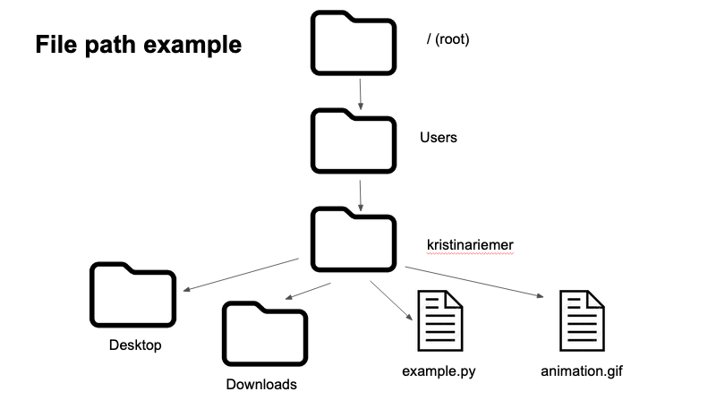
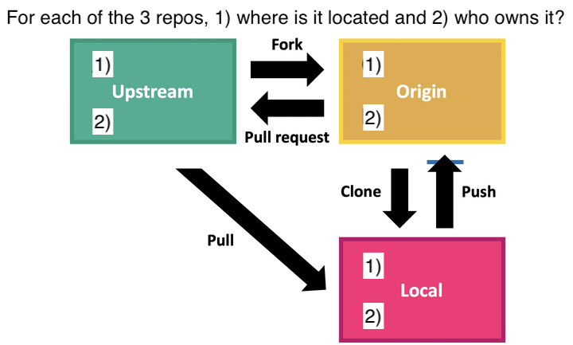

Using the Shell
The primary purpose of this curriculum page is to help instructors teach the material. Tangential purposes include sharing content with potential workshop participants and other educators. While this page can be used by workshop participants to review materials or for self-guided learning, it is not optimally designed for those purposes.
Workshop Overview
Purpose
To introduce CALS researchers to better practices for sharing their code and results, managing their projects, and improving reproducibility of their computational work. Learners who already use R and RStudio will get the most out of this workshop.
Instructional objectives
- Share & collaborate
- Learn how to do version control for code and data files
- Tools: shell, git & GitHub via the RStudio terminal pane
- Manage & organize
- Learn how to organize projects and use coding better practices
- Tools: RStudio projects
- Repeat & reproduce
- Learn to repeat coding tasks more effectively and refactor code to be more reusable and reproducible
- Tools: base R
- Clean & plot
- Learn to use tidyverse tools to modify and visualize data
- Tools: dplyr/tidyr/ggplot2
- Document & publish
- Learn how to write project READMEs and publish reports
- Tools: markdown, Rmarkdown files, RPubs, RStudio Connect, GitHub
General structure
This workshop was originally taught as a series of 8 two-hour virtual sessions, meeting twice a week for four weeks. We have now added two sessions, such that the workshop series can extend for 8, 9, or 10 sessions.
Lesson 4 is an optional extension to explore the foundations of collaborating on GitHub, including forking, remotes, and pull requests. Lessons 6 thru 9 are now modular, meaning that they are independent of each other and can be mixed and matched depending on learner interest.
Relatively small workshop size (< 15) helped keep one-on-one troubleshooting manageable for two instructors.
The workshop format is primarily code-along, with some sessions that include more discussion and demonstration. We use R/RStudio for the entire workshop. Students should install R and RStudio prior to the first class.
Lessons
Table of contents
| Lesson | Theme | Topic |
|---|---|---|
| 1 | Share & collaborate | Shell scripting |
| 2 | Share & collaborate | Version control with git |
| 3 | Share & collaborate | Developing code on GitHub |
| 4 (optional) | Share & collaborate | Collaborating with GitHub |
| 5 | Manage & organize | Project management and coding best practices |
| 6 (modular) | Repeat & reproduce | Intermediate R programming I |
| 7 (modular) | Repeat & reproduce | Intermediate R programming II |
| 8 (modular) | Clean & plot | Data manipulation |
| 9 (modular) | Clean & plot | Data visualization |
| 10 | Document & publish | Documentation |
Lesson subheader definitions
“Installation & materials” lists what needs to be installed for the lesson and provides links to all lesson materials used, which were mostly sourced from The Carpentries’ excellent content.
“Review” suggests warm up activities to begin each session.
“Modifications” details how we changed the lesson materials so that lessons worked together and fit the two hour lesson time limit. Includes what we left out, when order was changed, and when we did something different.
“Teaching notes” provides information and tips about how we taught the material, including troubleshooting installation instructions.
“Homework” adds optional exercises and tasks to reinforce lesson content and/or prepare for the next lesson.
Shell Commands
Objective
Learners should be comfortable with their file structure and navigating around it using command line commands in RStudio Terminal pane.
Installation & materials
- Slides
- macOS git installation
- Windows git installation (detailed step-by-step here)
- Software Carpentry Unix Shell episode #1
- Software Carpentry Unix Shell episode #2
Modifications
- Use terminal window within RStudio as command line interface
- Start with a brief overview of RStudio panes
- Only need to use Terminal and Files tabs
- Emphasize that Files tab is analogous to file finder
- Skip all exercises, including “Nelle” example
- At beginning of episode #2, explain file path using example from instructor’s file system; example diagram below

- Can also use example diagram for file system using instructor’s

Teaching notes
- If not already installed, learners should install R and RStudio
- Need to install git initially for Windows users to have shell commands
- Separate into 2 breakout rooms to install Git for Windows and macOS
- macOS may have git already, can check with
which gitorgit --version git --versionmay in fact prompt macOS users to install xcode command line tools, which comes with git.- Restart RStudio after installation
- For Windows, open RStudio Tools/Global Options/Terminal and make sure GitBash is selected
- Download shell-lesson-data.zip to
Desktop/location; this won’t be referenced in later lessons - Emphasize purposes for learning shell
- Helpful for using git and GitHub
- Easier to deal with installation problems
- Understanding file structure and file paths
- Unzipping shell-lesson-data.zip through point-and-click in the RStudio Files tab does not work consistently across machines; recommend unzipping on the command line with
unzip- Once unzipped, have everyone share absolute file path to location of file
- If there’s additional time, can also cover Software Carpentry Unix Shell episode #3
Homework
Create diagram, with pen and paper or digitally, of their own file system.
Lesson 2
Topic
Version control with git
Objective
Learners will practice how changes to code are tracked with version control and become familiar with command-line git within the RStudio IDE.
Installation & materials
- Slides
- Software Carpentry Version Control with Git episode #2
- Software Carpentry Version Control with Git episode #3
- Software Carpentry Version Control with Git episode #4
- Software Carpentry Version Control with Git episode #6
- (optional) Software Carpentry Version Control with Git episode #5
Review
Ask students to share their diagram of their file system. Warm up with the review question in slide deck.
Modifications
- Navigate to
Desktop/as a consistent location - Use
mkdirto make a new folder and name itpilot-analyses/ - Use RStudio interface to create a new/blank R file (rather than using the planets example)
- Add R pseudocode or comments to blank R file
Teaching notes
pilot-analyses/will be the locally created repository- When setting up git for the first time, remind students to use the same email as their existing GitHub account or to select an email that will be used for GitHub
- Reinforce using
cdandls -alto move around the file structure and see contents - Show how git restore can be used to undo a saved file
HEADis the snapshot of your last commit- Can use
git reset HEAD~to undo the last commit and unstage everything—the equivalent of reversing the git add and git commit commands.
Homework
Create a GitHub account if you don’t already have one. For an extra challenge, identify an existing folder and turn into a repository.
Lesson 3
Topic
Developing code on GitHub
Objective
Learners will share their local repository on GitHub and learn how to sync some files while ignoring others systematically. Learners will practice developing new code on branches.
Installation & materials
- Slides
- Software Carpentry Version Control with Git episode #6
- GitHub authentication with PAT using Jenny Bryan’s Git book chapter 9 or with ssh using Software Carpentry Version Control #7, section 3
- Software Carpentry Version Control with Git episode #7
- Software Carpentry branching add-on
Review
If anyone turned a folder into a repository, share how that went. Ask students to navigate to previous repository, add new R file, and practice an add-commit cycle.
Modifications
- Provide a large .csv file, ask students to move into pilot-analyses repo within a data folder using cd and filepaths
- Use RStudio interface to create a new text file, save as .gitignore; explore how to suppress a specific file, files within a folder, and specific kinds of file extensions
- Start remotes section with SSH setup, one of two options:
- SSH method. More difficult to explain and set up, but doesn’t expire and applies to all repos.
- PAT method. Easier to set up, but requires additional R packages and is recommended to set to expire.
- Proceed to connecting local repository to GitHub repository; GitHub repository must be empty
- Create new repository entitled
repro-DS-workshopon GitHub; can include README, license, and .gitignore. Clone locally to wherever course materials are organized - Show how checking out a branch literally changes the local files
Teaching notes
- Practice another add-commit cycle after creating the .gitignore
- If
ssh -T git@github.comdoesn’t work, could be an issue with OpenSSH. Try a different ssh flavor:which -a ssh- Use a non OpenSSH version, e.g.,
/usr/bin/ssh -T git@github.com
- Introduce the add-commit-push cycle
Homework
If Lesson 4 will not be taught, skim the Analyses section of tidyverse R style guide. What practice or guideline was new to you?
Otherwise, connect personal repository to GitHub.
Lesson 4
Topic
Collaborating with GitHub
Objective
Learners will fork and clone a repository on GitHub and use branches to open pull requests.
Installation & materials
Review
If anyone connected a local repository to GitHub, share how that went. Ask students to navigate to previous repository, amend an existing file, and practice an add-commit-push cycle.
Modifications
- The only part of #8 that was taught was cloning a forked repository. Ask students to fork an instructor-created repository, then clone locally. This will be the repo for downstream files.
- Use
git remote add upstream xxxxto connect repo to upstream. If time permits, demonstrate a pull request (PR). - Share diagram of relationships between the remotes (upstream and origin) and local
- Demonstrate pull requests on GitHub
- Show how distinct units of work can be separately submitted via branches
Teaching notes
- Have students fork a
cct-datasciencerepo as an example of a real research compendium - Easy to check on learner progress by looking for who has and hasn’t forked repo
Homework
Skim the Analyses section of tidyverse R style guide. What practice or guideline was new to you?
Also, explore the upstream cct-datascience repo. What practices do you notices that are new or different from your own?
Lesson 5
Topic
Project management and coding best practices
Objective
Learners will learn about and practice managing their projects using file structure and RStudio projects, and about current best practices and style guides for R coding. (optional) They will also get more comfortable with version control through learning and doing pull requests and reinforcement of git cycle.
Installation & materials
- Slides
- Software Carpentry Introduction to R and RStudio episode
- Software Carpentry Project Management with RStudio episode
- Software Carpentry Best Practices for Writing R Code
Review
If lesson 4 was covered, do exercise asking participants to identify who owns the following repos and where they are located, for upstream, origin, and local repos. See example diagram below:

If lesson 4 was not covered, do the review section in lesson 4.
Modifications
- RStudio
- Cover only “Introduction to RStudio” section unless learners need a refresher on R
- Additional keyboard shortcuts from RStudio’s reference list (and mention command palette cmd + shift + P)
- Project management
- Do “Best practices for project organization” including yellow “Tip: Good Enough Practices for Scientific Computing” box
- Then “A possible solution” section about R projects
- Include splitting scripts up into modular chunks to promote reproducibility and avoiding rerunning time-intensive data cleaning
- Coding best practices
- Condensed into a single slide
Teaching notes
- After introducing concept of research compendiums, walk through turning their local copy of forked repo into an R project
- To practice git, add and commit new
*.Rproj, then push to remote repo - Include how R projects promotes reproducibility, by being able to save scripts and close them or entire project
- Test code in forked cct-datascience repo; are the scripts reproducible? Which characteristics contribute (or not) to its reproducibility?
- If lesson 4 was skipped, add, commit, push these changes and then walk through opening a pull request to the upstream (instructor’s) repo
- This is another nice way to keep track of learners’ progress
Homework
Apply one or more of the organizing principles of a research compendium to an existing research project.
Lesson 6
Topic
Intermediate R programming I
Objective
Learners will learn how to make their R code more reproducible using functions and control flow approaches.
Installation & materials
- Slides
- Data Carpentry for Biologists functions lecture
- Data Carpentry for Biologists conditionals lecture
Review
Ask to share cleaning up of example script, their own script, or their research project folder from lesson 5.
Modifications
- For functions lecture, had them do only the “Use and Modify” exercise
- From conditionals lecture, only did “if statements” section
- From latter, only did “Basic If Statements” #2 exercise
- Added on brief explanation of
ifelse, using the example ofifelse(length == 5, "correct", "incorrect") - Mention
case_whenfrom dplyr for more complicated if & else steps
Teaching notes
- Before doing functions and conditions, demonstrate updating local
cct-organizationrepo from upstream after adding a commit to the upstream - Create new R script for functions content, and another new R script for control flow (
ifelseandforloops) content. Put both scripts intorepro-DS-workshoprepo - Mention functions are often used with for loops or apply statements
- After functions, mention consistent order of sections in scripts; example is libraries, read in data, functions, executing functions
- Include real world examples of
ifandifelsestatements to motivate their use, especially for checking if files already exist - Demonstrate making a new branch and opening up a pull request in their
repro-DS-workshoprepo at the end of each set of material; can merge pull request
Homework
Create a plan for applying these skills to their own research projects. Can apply different parts to different projects, or more integratively to one single project. Some possibilities:
- Turn the project folder for one of your current research project into a git/GitHub repo and/or R project
- Modify an R script to use functions, if/for loops, or format code according to best practices
- Improve file and folder organization for project or your entire computer!
Lesson 7
Topic
Intermediate R programming II
Objective
Learners will learn how to make their R code more reproducible using for loops and the apply family of functions.
Installation & materials
Review
Can share their plans for apply skills to their research. Lead optional discussion on when to use base R vs. tidyverse packages/functions.
Modifications
- For for loops lecture:
- At “Do Tasks 3-4…”, do “Basic For Loop” exercises #2 & #3
- Skip sections “Looping over multiple values” and “Looping with functions”
- Stop at “Looping over files” due to zip download issues
- For apply lecture:
- Do “Size Estimates With Maximum” exercise
- Do “Size Estimates Vectorized 2” exercise
- Stop after first section in “Other apply functions (optional)” section
Teaching notes
- Create new R script for these materials. Put script into
repro-DS-workshoprepo - Emphasize using for loops using index or non-index methods. Index can be useful for reducing memory use and for storing results
- If time, demonstrate combining
ifandfor
Homework
Identify a script from a research project that could benefit from a for loop, apply, conditional, or function.
Lesson 8
Topic
Data manipulation
Objective
Learn how to reproducibly clean, summarize, and reorganize dataframes using tidyverse R packages.
Installation & materials
- Slides
- Install R packages ‘dplyr’, ‘tidyr’, ‘readr’
- Data carpentry R ecology revamp episode #2
- Data carpentry R ecology revamp episode #3
Modifications
- Explain data.frames and types of vectors, but skip over exercises on coercion and factors
- Clarify difference between
==and%in%, including that no warning or error given for==that induces vector recycling - End with saving script and doing an add-commit-push cycle to sync local repository with GitHub repository
Teaching notes
- Have students install each package separately rather than as the tidyverse—can be important to know which functions come from which packages
Homework
None
Lesson 9
Topic
Data visualization
Objective
Learners will learn how to build figures using ggplot and practice making multiple plots (for loops, faceting).
Installation & materials
- Slides
- Install ‘ggplot2’
- Data Carpentry R ecology lesson - #4 ‘Data visualization’
Modifications
- Make a time series plot, but with mean weights across a particular species (
species_id == "DM")- Reinforce the
group_by()andsummarize()functions from an earlier lesson - Demonstrate piping datasets into
ggplot()
- Reinforce the
- Challenge students to filter by and plot all members of the genus Dipodomys; what are some choices for differentiating between species?
- Students may have used
color = species_idwithinaes() - Show
facet_wrap()as an option, particularly withscales = 'free_y'
- Students may have used
- Additional challenge of adding a third factor of sex (in addition to year and species_id)
- Show
facet_grid()as an option, with species by row and sex by column - What are the advantages and disadvantages of plotting together versus separately?
- Show
- Final note of caution: it can be important to depict the number of samples that when into the sample mean and sd
- Can be added with
geom_text()to the graph itself - Or as a color axis when combined with
facet_grid()
- Can be added with
Teaching notes
- Students may be familiar with the basics of ggplot already, this portion of the lesson emphasizes how to build plots and customize viewing options to maximize students’ own understanding of their data (as opposed to how to make publication-quality graphs)
- If ‘Intermediate R programming II’ was taught, challenge students to create plots of mass over time for each species within a genus using a for loop. Saving out plots with different names will be an extra challenge and require
paste0(). - Consider replacing data visualization with cleaning and joining data (Data carpentry R ecology revamp episode #4), with more hands on work in three groups.
Homework
For loop for plots of mass over time of each species within a genus.
Lesson 10
Topic
Documentation
Objective
Learners will understand the purpose of a README and practice using Rmarkdown to document and publish reports.
Installation & materials
- Slides
- Install R packages
rmarkdownandknitr - Data Carpentry for Biologists knitr lecture
Review
Go through exercise for plotting using for loop
Modifications
- No lesson materials for first section about markdown
- For Rmarkdown lesson:
- Simplify text used to spend less time typing
- Save .Rmd file in newly created
docsfolder (to demonstrate project management) - Skip “Citations” section
- Stop at “R Presentations” section
- No lesson materials for third section about READMEs
Teaching notes
- Markdown
- Basis of a lot of documentation: READMEs, R Markdowns, hackmd, GitHub issues
- Plain text formatting, can be converted to HTML
- Compare file in RStudio to GitHub render
- Transect runs README as example
- Supposed to be able to read plain text version easily
- Been around for almost two decades
- Simple and easy to read and format
- GUI vs. command line type approach
- Can do same things in Word/Google Doc but is more explicit and less point and click
- Also better for version control
- R Markdown
- Better documentation of code
- Use cases: writing a lot of comments on code, other people will be looking at code/outputs, exploratory work with notes, write manuscripts
- Basis is markdown, but combines with chunks of R code
- Literate programming = combining text and code
- Create new branch called docs for this and README
- Do DC lesson
- Can publish these online (besides GH)
- RPubs or UA’s RStudio Connect
- Push button in RStudio, point this out
- Quarto is next generation of R Markdown
- READMEs
- R Markdown good for describing code and data within a script
- READMEs are good for documenting an entire project (GitHub repo)
- Comes from software engineering
- File that introduces and explains a project
- Show example: https://github.com/cct-datascience/rangeland-restore
- Look at raw
- Contains info about other files and folders in a repo
- Also package versions and installation instructions, how to contribute
- Should go in main folder of project
- Usually a plain text file
- Name is in all upper case
- GitHub encourages use of README
- Automatically asks to include one when creating new repo
- Automatically displays one on repo main page if there is one
- Need to be updated regularly during project
- If time, create README in
repro-DS-workshoprepo listing project folder and file names with descriptions
- GitHub issues
- GitHub markdown specifically: https://guides.github.com/features/mastering-markdown/
- Walk through use of GitHub issues, including markdown check box list
- Example: https://github.com/genophenoenvo/neon-datasets/issues
- Forked repos don’t have issues included by default, change in repo settings
- GitHub project boards & wikis
- Like kanban board
- Uses GH issues, in different categories
Homework
None
Post-lesson followup sessions
It is optional but encouraged to include one or two followup sessions in this workshop series after the lessons focused on content. These can be used to review material, such as the Jeopardy game that we created. It can be used to cover a small amount of other material, such as this session we did on “Tips for getting your code to work” (see slides). And it can be used for attendees to present the work that they’ve done as demos or “show and tells”.
Technical notes
- One early problem occurred when students were unsure of which ‘Documents’ or ‘Desktop’ folder they were saving to, which made navigating filepaths tricky. Note that on some PCs, the Windows OneDrive backup folders are saved to by default, but students should navigate to
C:/Users/username/DocumentsorC:/Users/username/Desktop - R packages sometimes did not install properly.
- One reason was that some usernames included special characters, which were not interpreted correctly.
- Another included R being installed on a remote server, rather directly on the local machine
Acknowlegements
Thanks to Teresa Mourad and Fred Abbott of the Ecological Society of America, who invited us to teach the first half of the Critical Skills to Scale Up Ecology workshop, which planted the seed for developing this curriculum. We also appreciate the inaugural class of this workshop series at UA in Spring 2022, who inspired deeper conversation about why and how to teach this course. Finally, a huge thanks to The Carpentries organization for generating all of the volunteer-created content we used here, and for training both of us in pedagogy.